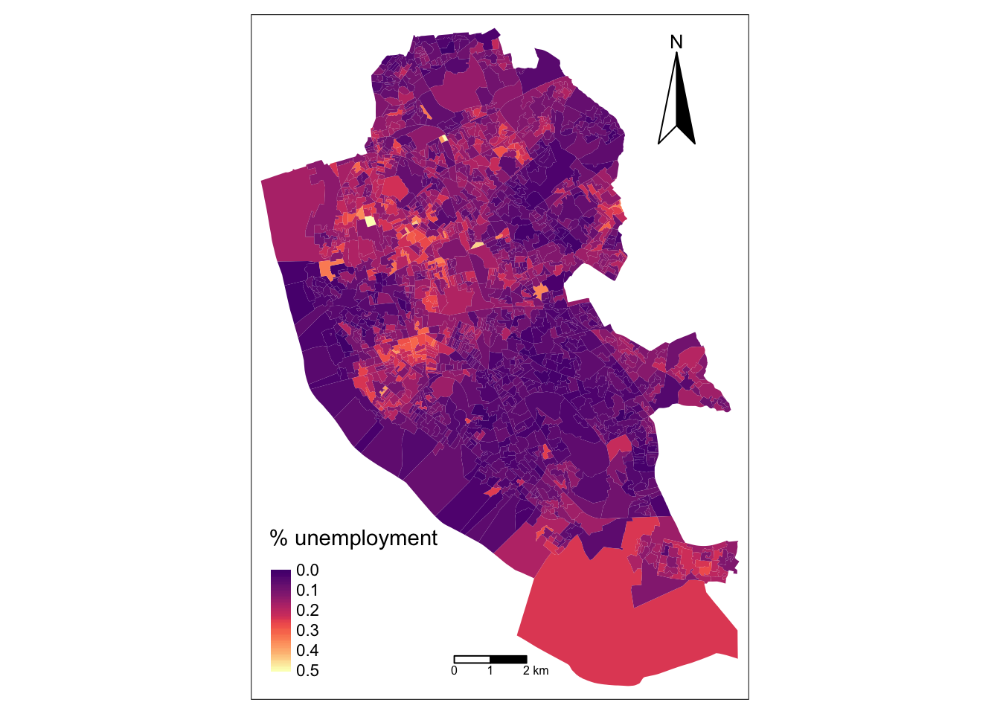

# Data manipulation, transformation and visualisation
library(tidyverse)
# Nice tables
library(kableExtra)
# Simple features (a standardised way to encode vector data ie. points, lines, polygons)
library(sf)
# Spatial objects conversion
library(sp)
# Thematic maps
library(tmap)
# Colour palettes
library(RColorBrewer)
# More colour palettes
library(viridis) # nice colour schemes
# Fitting multilevel models
library(lme4)
# Tools for extracting information generated by lme4
library(merTools)
# Exportable regression tables
library(jtools)
library(stargazer)
library(sjPlot)8 Multilevel modelling
This chapter provides an introduction to multi-level data structures and multi-level modelling and draws on the following references:
- Gelman and Hill (2006) provides an excellent and intuitive explanation of multilevel modelling and data analysis in general. Read Part 2A for a really good explanation of multilevel models.
- Multilevel Modelling (n.d.) is an useful online resource on multilevel modelling and is free!
8.1 Dependencies
This chapter uses the following libraries which are listed in the [Dependency list] Section of Chapter 1:
8.2 Data
For this chapter, we will data for Liverpool from England’s 2011 Census. The original source is the Office of National Statistics and the dataset comprises a number of selected variables capturing demographic, health and socio-economic attributes of the local resident population at four geographic levels: Output Area (OA), Lower Super Output Area (LSOA), Middle Super Output Area (MSOA) and Local Authority District (LAD). The variables include population counts and percentages. For a description of the variables, see the readme file in the mlm data folder.1
1 Read the file in R by executing read_tsv("data/mlm/readme.txt") . Ensure the library readr is installed before running read_tsv.
Let us read the data:
We can now attach and visualise the structure of the data.
# attach data frame
attach(oa_shp)The following object is masked from package:viridis:
unempSimple feature collection with 6 features and 19 fields
Geometry type: MULTIPOLYGON
Dimension: XY
Bounding box: xmin: 335056 ymin: 389163 xmax: 336155 ymax: 389642
Projected CRS: Transverse_Mercator
oa_cd lsoa_cd msoa_cd lad_cd ward_nm dstrt_nm cnty_nm
1 E00032987 E01006515 E02001383 E08000012 Riverside Liverpool Merseyside
2 E00032988 E01006514 E02001383 E08000012 Princes Park Liverpool Merseyside
3 E00032989 E01033768 E02001383 E08000012 Princes Park Liverpool Merseyside
4 E00032990 E01033768 E02001383 E08000012 Princes Park Liverpool Merseyside
5 E00032991 E01033768 E02001383 E08000012 Princes Park Liverpool Merseyside
6 E00032992 E01033768 E02001383 E08000012 Princes Park Liverpool Merseyside
cntry_nm pop age_60 unemp lat long males lt_ill
1 England 198 0.11616162 0.1130435 53.39821 -2.976786 46.46465 19.19192
2 England 348 0.16954023 0.1458333 53.39813 -2.969072 58.33333 33.62069
3 England 333 0.09009009 0.1049724 53.39778 -2.965290 64.26426 23.72372
4 England 330 0.15151515 0.1329787 53.39802 -2.963597 59.69697 23.03030
5 England 320 0.04687500 0.1813725 53.39706 -2.968030 60.62500 25.00000
6 England 240 0.05833333 0.2519685 53.39679 -2.966494 57.91667 28.33333
Bhealth VBhealth no_qual manprof geometry
1 6.565657 1.515152 24.69136 7.643312 MULTIPOLYGON (((335187 3894...
2 10.344828 1.436782 14.84848 13.375796 MULTIPOLYGON (((335834 3895...
3 6.606607 2.102102 15.38462 10.204082 MULTIPOLYGON (((335975.2 38...
4 5.151515 2.424242 17.91531 15.224913 MULTIPOLYGON (((336030.8 38...
5 8.750000 2.187500 12.58278 11.333333 MULTIPOLYGON (((335804.9 38...
6 6.666667 2.916667 27.47748 5.479452 MULTIPOLYGON (((335804.9 38...
The data are hierarchically structured: OAs nested within LSOAs; LSOAs nested within MSOAs; and, MSOAs nested within LADs. Observations nested within higher geographical units may be correlated.
This is one type of hierarchical structure. There is a range of data structures:
Strict nested data structures eg. an individual unit is nested within only one higher unit
Repeated measures structures eg. various measurements for an individual unit
Crossed classified structures eg. individuals may work and live in different neighbourhoods
Multiple membership structure eg. individuals may have two different work places
Why should we care about the structure of the data?
Draw correct statistical inference: Failing to recognise hierarchical structures will lead to underestimated standard errors of regression coefficients and an overstatement of statistical significance. Standard errors for the coefficients of higher-level predictor variables will be the most affected by ignoring grouping.
Link context to individual units: We can link and understand the extent of group effects on individual outcomes eg. how belonging to a certain socio-economic group influences on future career opportunities.
Spatial dependency: Recognising the hierarchical structure of data may help mitigate the effects of severe spatial autocorrelation.
Quickly, let us get a better idea about the data and look at the number of OAs nested within LSOAs and MSOAs
8.3 Modelling
We should now be persuaded that ignoring the hierarchical structure of data may be a major issue. Let us now use a simple example to understand the intuition of multilevel model using the census data. We will seek to understand the spatial distribution of the proportion of population in unemployment in Liverpool, particularly why and where concentrations in this proportion occur. To illustrate the advantages of taking a multilevel modelling approach, we will start by estimating a linear regression model and progressively building complexity. We will first estimate a model and then explain the intuition underpinning the process. We will seek to gain a general understanding of multilevel modelling. If you are interested in the statistical and mathemathical formalisation of the underpinning concepts, please refer to Gelman and Hill (2006).
We first need to want to understand our dependent variable: its density ditribution;
ggplot(data = oa_shp) +
geom_density(alpha=0.8, colour="black", fill="lightblue", aes(x = unemp)) +
theme_classic()summary(unemp) Min. 1st Qu. Median Mean 3rd Qu. Max.
0.00000 0.05797 0.10256 0.11581 0.16129 0.50000 and, its spatial distribution:
# ensure geometry is valid
oa_shp = sf::st_make_valid(oa_shp)
# create a map
legend_title = expression("% unemployment")
map_oa = tm_shape(oa_shp) +
tm_fill(col = "unemp", title = legend_title, palette = magma(256, begin = 0.25, end = 1), style = "cont") +
tm_borders(col = "white", lwd = .01) +
tm_compass(type = "arrow", position = c("right", "top") , size = 4) +
tm_scale_bar(breaks = c(0,1,2), text.size = 0.5, position = c("center", "bottom"))
map_oa
Let us look at those areas:
Simple feature collection with 203 features and 3 fields
Geometry type: POLYGON
Dimension: XY
Bounding box: xmin: 333993.8 ymin: 379748.5 xmax: 345600.2 ymax: 397681.5
Projected CRS: Transverse_Mercator
First 10 features:
oa_cd pop unemp geometry
1 E00032992 240 0.2519685 POLYGON ((335804.9 389421.6...
2 E00033008 345 0.2636364 POLYGON ((335080 388528, 33...
3 E00033074 299 0.2075472 POLYGON ((336947.3 387766.7...
4 E00033075 254 0.2288136 POLYGON ((336753.6 387465.2...
5 E00033080 197 0.2647059 POLYGON ((338196 387079, 33...
6 E00033103 298 0.2148148 POLYGON ((340484 385429.6, ...
7 E00033116 190 0.2156863 POLYGON ((341960.7 386422.1...
8 E00033134 190 0.2674419 POLYGON ((337137 393089.6, ...
9 E00033137 289 0.2661290 POLYGON ((337363.8 392122.4...
10 E00033138 171 0.3561644 POLYGON ((337481.5 392166.2...8.3.1 Baseline Linear Regression Model
Now let us estimate a simple linear regression model with the intercept only:
# specify a model equation
eq1 <- unemp ~ 1
model1 <- lm(formula = eq1, data = oa_shp)
# estimates
summary(model1)
Call:
lm(formula = eq1, data = oa_shp)
Residuals:
Min 1Q Median 3Q Max
-0.11581 -0.05784 -0.01325 0.04548 0.38419
Coefficients:
Estimate Std. Error t value Pr(>|t|)
(Intercept) 0.115812 0.001836 63.09 <2e-16 ***
---
Signif. codes: 0 '***' 0.001 '**' 0.01 '*' 0.05 '.' 0.1 ' ' 1
Residual standard error: 0.07306 on 1583 degrees of freedomTo understand the differences between the linear regression model and multilevel models, let us consider the model we have estimated:
\[y_{i} = \beta_{0} + e_{i}\] where \(y_{i}\) represents the proportion of the unemployed resident population in the OA \(i\); \(\beta_{0}\) is the regression intercept and measures the average proportion of the unemployed resident population across OAs; and, \(e_{i}\) is the error term. But how do we deal with the hierarchical structure of the data?
8.3.1.1 Limitations
Before looking at the answer, let’s first understand some of the key limitations of the linear regression model to handle the hierarchical structure of data. A key limitation of the linear regression model is that it only captures average relationships in the data. It does not capture variations in the relationship between variables across areas or groups. Another key limitation is that the linear regression model can capture associations at either macro or micro levels, but it does not simultaneously measure their interdependencies.
To illustrate this, let us consider the regression intercept. It indicates that the average percentage of unemployed population at the OA level is 0.12 but this model ignores any spatial clustering ie. the percentage of unemployed population tends to be similar across OAs nested within a same LSOA or MSOA. A side effect of ignoring this is that our standard errors are biased, and thus claims about statistical significance based on them would be misleading. Additionally, this situation also means we cannot explore variations in the percentage of unemployed population across LSOAs or MSOAs ie. how the percentage of unemployed population may be dependent on various contextual factors at these geographical scales.
8.3.1.2 Fixed Effect Approach
An alternative approach is to adopt a fixed effects approach, or no-pooling model; that is, adding dummy variables indicating the group classification into the regression model eg. the way OAs is nested within LSOAs (or MSOAs). This approach has limitations. First, there is high risk of overfitting. The number of groups may be too large, relative to the number of observations. Second, the estimation of multiple parameters may be required so that measuring differences between groups may be challenging. Third, a fixed effects approach does not allow including group-level explanatory variables. You can try fitting a linear regression model extending our estimated model to include dummy variables for individual LSOAs (and/or MSOAs) so you can compare this to the multilevel model below.
An alternative is fitting separate linear regression models for each group. This approach is not always possible if there are groups with small sizes.
8.4 Multilevel Modelling: Random Intercept Model
We use multilevel modelling to account for the hierarchical nature of the data by explicitly recognising that OAs are nested within LSOAs and MSOAs. Multilevel models can easily be estimated using in R using the package lme4. We implement an two-level model to allow for variation across LSOAs. We estimate an only intercept model allowing for variation across LSOAs. In essence, we are estimating a model with varying intercept coefficient by LSOA. As you can see in the code chunk below, the equation has an additional component. This is the group component or LSOA effect. The (1 | lsoa_cd) means that we are allowing the intercept, represented by 1, to vary by LSOA.
# specify a model equation
eq2 <- unemp ~ 1 + (1 | lsoa_cd)
model2 <- lmer(eq2, data = oa_shp)
# estimates
summary(model2)Linear mixed model fit by REML ['lmerMod']
Formula: unemp ~ 1 + (1 | lsoa_cd)
Data: oa_shp
REML criterion at convergence: -4382.6
Scaled residuals:
Min 1Q Median 3Q Max
-2.8741 -0.5531 -0.1215 0.4055 5.8207
Random effects:
Groups Name Variance Std.Dev.
lsoa_cd (Intercept) 0.002701 0.05197
Residual 0.002575 0.05074
Number of obs: 1584, groups: lsoa_cd, 298
Fixed effects:
Estimate Std. Error t value
(Intercept) 0.114316 0.003277 34.89We can estimate a three-level model by adding (1 | msoa_cd) to allow the intercept to also vary by MSOAs and account for the nesting structure of LSOAs within MSOAs.
# specify a model equation
eq3 <- unemp ~ 1 + (1 | lsoa_cd) + (1 | msoa_cd)
model3 <- lmer(eq3, data = oa_shp)
# estimates
summary(model3)Linear mixed model fit by REML ['lmerMod']
Formula: unemp ~ 1 + (1 | lsoa_cd) + (1 | msoa_cd)
Data: oa_shp
REML criterion at convergence: -4529.3
Scaled residuals:
Min 1Q Median 3Q Max
-2.5624 -0.5728 -0.1029 0.4228 6.1363
Random effects:
Groups Name Variance Std.Dev.
lsoa_cd (Intercept) 0.0007603 0.02757
msoa_cd (Intercept) 0.0020735 0.04554
Residual 0.0025723 0.05072
Number of obs: 1584, groups: lsoa_cd, 298; msoa_cd, 61
Fixed effects:
Estimate Std. Error t value
(Intercept) 0.115288 0.006187 18.64We see two sets of coefficients: fixed effects and random effects. Fixed effects correspond to the standard linear regression coefficients. Their interpretation is as usual. Random effects are the novelty. It is a term in multilevel modelling and refers to varying coefficients i.e. the randomness in the probability of the model for the group-level coefficients. Specifically they relate to estimates of the average variance and standard deviation within groups (i.e. LSOAs or MSOAs). Intiutively, variance and standard deviation indicate the extent to which the intercept, on average, varies by LSOAs and MSOAs.


More formally, we first estimated the simplest regression model which is an intercept-only model and equivalent to the sample mean (i.e. the fixed part of the model):
\[y_{ijk} = \mu + e_{ijk}\] and then we made the random part of the model (\(e_{ijk}\)) more complex to account for the hierarchical structure of the data by estimating the following three-level regression model:
\[y_{ijk} = \mu + u_{i..} + u_{ij.} + e_{ijk}\]
where \(y_{ijk}\) represents the proportion of unemployed population in OA \(i\) nested within LSOA \(j\) and MSOA \(k\); \(\mu\) represents the sample mean and the fixed part of the model; \(e_{ijk}\) is the deviation of an observation from its LSOA mean; \(u_{ij.}\) is the deviation of the LSOA mean from its MSOA mean; \(u_{i..}\) is the deviation of the MSOA mean from the fixed part of the model \(\mu\). Conceptually, this model is decomposing the variance of the model in terms of the hierarchical structure of the data. It is partitioning the observation’s residual into three parts or variance components. These components measure the relative extent of variation of each hierarchical level ie. LSOA, MSOA and grand means. To estimate the set of residuals, they are assumed to follow a normal distribution and are obtained after fitting the model and are based on the estimates of the model parameters (i.e. intercept and variances of the random parameters).
Let’s now return to our three-level model (reported again below), we see that the intercept or fixed part of the model is the same as for the linear regression. The multilevel model reports greater standard errors. Multilevel models capture the hierarchical structure of the data and thus more precisely estimate the standard errors for our parameters.
# report model 3
summary(model3)Linear mixed model fit by REML ['lmerMod']
Formula: unemp ~ 1 + (1 | lsoa_cd) + (1 | msoa_cd)
Data: oa_shp
REML criterion at convergence: -4529.3
Scaled residuals:
Min 1Q Median 3Q Max
-2.5624 -0.5728 -0.1029 0.4228 6.1363
Random effects:
Groups Name Variance Std.Dev.
lsoa_cd (Intercept) 0.0007603 0.02757
msoa_cd (Intercept) 0.0020735 0.04554
Residual 0.0025723 0.05072
Number of obs: 1584, groups: lsoa_cd, 298; msoa_cd, 61
Fixed effects:
Estimate Std. Error t value
(Intercept) 0.115288 0.006187 18.648.4.1 Interpretation
Fixed effects
We start by examining the fixed effects or estimated model averaging over LSOAs and MSOAs, \(y_{ijk} = 0.115288\) which can also be called by executing:
fixef(model3)(Intercept)
0.1152881 Th estimated intercept indicates that the overall mean taken across LSOAs and MSOAs is estimated as 0.115288 and is statistically significant at 5% significance.
Random effects
The set of random effects contains three estimates of variance and standard deviation and refer to the variance components discussed above. The lsoa_cd, msoa_cd and Residual estimates indicate that the extent of estimated LSOA-, MSOA- and individual-level variance is 0.0007603, 0.0020735 and 0.0025723, respectively.
8.4.2 Variance Partition Coefficient (VPC)
The purpose of multilevel models is to partition variance in the outcome between the different groupings in the data. We thus often want to know the percentage of variation in the dependent variable accounted by differences across groups i.e. what proportion of the total variance is attributable to variation within-groups, or how much is found between-groups. The statistic to obtain this is termed the variance partition coefficient (VPC), or intraclass correlation.2 For our case, the VPC at the LSOA level indicates that 14% of the variation in percentage of unemployed resident population across OAs can be explained by differences across LSOAs. What is the VPC at the MSOA level?
2 The VPC is equal to the intra-class correlation coefficient which is the correlation between the observations of the dependent variable selected randomly from the same group. For instance, if the VPC is 0.1, we would say that 10% of the variation is between groups and 90% within. The correlation between randomly chosen pairs of observations belonging to the same group is 0.1.
vpc_lsoa <- 0.0007603 / (0.0007603 + 0.0020735 + 0.0025723)
vpc_lsoa * 100[1] 14.06374You can also obtain the VPC by executing:
summ(model3)| Observations | 1584 |
| Dependent variable | unemp |
| Type | Mixed effects linear regression |
| AIC | -4521.26 |
| BIC | -4499.79 |
| Pseudo-R² (fixed effects) | 0.00 |
| Pseudo-R² (total) | 0.52 |
| Est. | S.E. | t val. | d.f. | p | |
|---|---|---|---|---|---|
| (Intercept) | 0.12 | 0.01 | 18.63 | 59.98 | 0.00 |
| p values calculated using Kenward-Roger standard errors and d.f. |
| Group | Parameter | Std. Dev. |
|---|---|---|
| lsoa_cd | (Intercept) | 0.03 |
| msoa_cd | (Intercept) | 0.05 |
| Residual | 0.05 |
| Group | # groups | ICC |
|---|---|---|
| lsoa_cd | 298 | 0.14 |
| msoa_cd | 61 | 0.38 |
8.4.3 Uncertainty of Estimates
You may have noticed that lme4 does not provide p-values, because of various reasons as explained by Doug Bates, one of the author of lme4. These explanations mainly refer to the complexity of dealing with varying sample sizes at a given hierarchical level. The number of observations at each hierarchical level varies across individual groupings (i.e. LSOA or MSOA). It may even be one single observation. This has implications for the distributional assumptions, denominator degrees of freedom and how to approximate a “best” solution. Various approaches exist to compute the statistical significance of estimates. We use the confint function available within lme4 to obtain confidence intervals.
confint(model3, level = 0.95)Computing profile confidence intervals ... 2.5 % 97.5 %
.sig01 0.02360251 0.03189046
.sig02 0.03707707 0.05562307
.sigma 0.04882281 0.05273830
(Intercept) 0.10307341 0.12751103.sig01 refers to the LSOA level; .sig02 refers to the MSOA level; and, .sigma refers to the OA level.
8.4.4 Assessing Group-level Variation
Estimated regression coefficients
In multilevel modelling, our primary interest is in knowing differences across groups. To visualise the estimated model within each group (ie. LSOA and MSOA), we type:
(Intercept)
E01006512 0.09915456
E01006513 0.09889615
E01006514 0.09297051
E01006515 0.09803754
E01006518 0.09642939The results indicate that the estimated regression line is \(y = 0.09915456\) for LSOA E01006512; \(y = 0.09889615\) for LSOA E01006513 and so forth. Try getting the estimated model within each MSOA.
Random effects
We can look at the estimated group-level (or LSOA-level and MSOA-level) errors; that is, random effects:
(Intercept)
E01006512 -0.01613353
E01006513 -0.01639194
E01006514 -0.02231758
E01006515 -0.01725055
E01006518 -0.01885870Group-level errors indicate how much the intercept is shifted up or down in particular groups (ie. LSOAs or MSOAs). Thus, for example, in LSOA E01006512, the estimated intercept is -0.01613353 lower than average, so that the regression line is (0.1152881 - 0.01613353) = 0.09915457 which is what we observed from the call to coef().
We can also obtain group-level errors (random effects) by using a simulation approach, labelled “Empirical Bayes” and discussed here. To this end, we run:
groupFctr groupID term mean median sd
1 lsoa_cd E01006512 (Intercept) -0.015282358 -0.014848796 0.01903544
2 lsoa_cd E01006513 (Intercept) -0.016209433 -0.015065126 0.02047753
3 lsoa_cd E01006514 (Intercept) -0.025155978 -0.024718295 0.02161466
4 lsoa_cd E01006515 (Intercept) -0.018462219 -0.019780436 0.01908881
5 lsoa_cd E01006518 (Intercept) -0.018345939 -0.020120473 0.01878457
6 lsoa_cd E01006519 (Intercept) -0.015526480 -0.014544111 0.01030805
7 lsoa_cd E01006520 (Intercept) -0.023959651 -0.023568505 0.01962450
8 lsoa_cd E01006521 (Intercept) 0.007240119 0.005636689 0.02009481
9 lsoa_cd E01006522 (Intercept) 0.018042823 0.017148770 0.01983297
10 lsoa_cd E01006523 (Intercept) 0.003177441 0.004090357 0.01880763The results contain the estimated mean, median and standard deviation for the intercept within each group (e.g. LSOA). The mean estimates are similar to those obtained from ranef with some small differences due to rounding.
To gain an undertanding of the general pattern of the random effects, we can use caterpillar plots via plotREsim - reported below. The plot on the right shows the estimated random effects for each MSOA and their respective interval estimate. Note that random effects are on average zero, represented by the red horizontal line. Intervals that do not include zero are in bold. Also note that the width of the confidence interval depends on the standard error of the respective residual estimate, which is inversely related to the size of the sample. The residuals represent an observation departures from the grand mean, so an observation whose confidence interval does not overlap the line at zero (representing the mean proportion of unemployed population across all areas) is said to differ significantly from the average at the 5% level.
Focusing on the plot on the right, we see MSOAs whose mean proportion of unemployed population, assuming no explanatory variables, is lower than average. On the right-hand side of the plot, you will see MSOAs whose mean proportion is higher than average. The MSOAs with the smallest residuals include the districts of Allerton and Hunt Cross, Church, Childwall, Wavertree and Woolton. What districts do we have at the other extreme?
re <- REsim(model3)
oa_shp %>% dplyr::select(msoa_cd, ward_nm, unemp) %>%
filter(as.character(msoa_cd) == "E02001387" | as.character(msoa_cd) == "E02001393")Simple feature collection with 49 features and 3 fields
Geometry type: POLYGON
Dimension: XY
Bounding box: xmin: 339178.6 ymin: 386244.2 xmax: 341959.9 ymax: 389646.7
Projected CRS: Transverse_Mercator
First 10 features:
msoa_cd ward_nm unemp geometry
1 E02001393 Allerton and Hunts Cross 0.03246753 POLYGON ((341333.6 387163.2...
2 E02001393 Allerton and Hunts Cross 0.03684211 POLYGON ((340658.2 387205.6...
3 E02001393 Church 0.04098361 POLYGON ((339908.1 387222.3...
4 E02001393 Allerton and Hunts Cross 0.05982906 POLYGON ((340306 386587, 34...
5 E02001393 Church 0.01212121 POLYGON ((339974.2 387118.5...
6 E02001393 Church 0.09219858 POLYGON ((340181.4 386957.8...
7 E02001393 Church 0.01986755 POLYGON ((340301.2 386582.2...
8 E02001393 Church 0.04615385 POLYGON ((340375.9 386918.6...
9 E02001393 Allerton and Hunts Cross 0.04117647 POLYGON ((340435.3 386337.4...
10 E02001393 Allerton and Hunts Cross 0.02272727 POLYGON ((340681.7 386614.4...We can also map the MSOA-level random effects. To this end, we first need to read a shapefile containing data at the MSOA level and merge it with the random effects estimates.
# read data
msoa_shp <- st_read("data/mlm/MSOA.shp")Reading layer `MSOA' from data source
`/Users/franciscorowe/Dropbox/Francisco/Research/sdsm_book/smds/data/mlm/MSOA.shp'
using driver `ESRI Shapefile'
Simple feature collection with 61 features and 17 fields
Geometry type: MULTIPOLYGON
Dimension: XY
Bounding box: xmin: 333086.1 ymin: 381426.3 xmax: 345636 ymax: 397980.1
Projected CRS: Transverse_Mercator# create a dataframe for MSOA-level random effects
re_msoa <- re %>% filter(groupFctr == "msoa_cd")
str(re_msoa)'data.frame': 61 obs. of 6 variables:
$ groupFctr: chr "msoa_cd" "msoa_cd" "msoa_cd" "msoa_cd" ...
$ groupID : chr "E02001347" "E02001348" "E02001349" "E02001350" ...
$ term : chr "(Intercept)" "(Intercept)" "(Intercept)" "(Intercept)" ...
$ mean : num -0.01346 -0.0256 -0.03288 0.00458 0.02411 ...
$ median : num -0.01173 -0.02132 -0.03242 0.00756 0.0232 ...
$ sd : num 0.0327 0.0338 0.0303 0.0322 0.0167 ...# merge data
msoa_shp <- merge(x = msoa_shp, y = re_msoa, by.x = "MSOA_CD", by.y = "groupID")Now we can create our map:
# ensure geometry is valid
msoa_shp = sf::st_make_valid(msoa_shp)
# create a map
legend_title = expression("MSOA-level residuals")
map_msoa = tm_shape(msoa_shp) +
tm_fill(col = "mean", title = legend_title, palette = magma(256, begin = 0, end = 1), style = "cont") +
tm_borders(col = "white", lwd = .01) +
tm_compass(type = "arrow", position = c("right", "top") , size = 4) +
tm_scale_bar(breaks = c(0,1,2), text.size = 0.5, position = c("center", "bottom"))
map_msoa8.4.5 Adding Individual-level Predictors
In this example, \(\mu\) represents the sample mean but it could include a collection of independent variables or predictors. To explain the logic, we will assume that unemployment is strongly associated to long-term illness. We could expect that long-term illness (lt_ill) will reduce the chances of working and therefore being unemployed. Note that our focus is on the relationship, not on establishing causation. Specifically we want to estimate the relationship between unemployment and long-term illness and we are interested in variations in OA-level unemployment by MSOAs so we will estimate the following two-level model:
OA-level:
\[y_{ij} = \beta_{0j} + \beta_{1}x_{ij} + e_{ij}\] MSOA-level:
\[\beta_{0j} = \beta_{0} + u_{0j}\] Replacing the first equation into the second, we have:
\[y_{ij} = (\beta_{0} + u_{0j}) + \beta_{1}x_{ij} + e_{ij}\] where \(y\) the proportion of unemployed population in OA \(i\) within MSOA \(j\); \(\beta_{0}\) is the fixed intercept (averaging over all MSOAs); \(u_{0j}\) represents the MSOA-level residuals or random effects; \(\beta_{0}\) and \(u_{0j}\) together represent the varying-intercept; \(\beta_{1}\) is the slope coefficient; \(x_{ij}\) represents the percentage of long-term illness population; and, \(e_{ij}\) is the individual-level residuals.
We estimate the model executing:
# change to proportion
oa_shp$lt_ill <- lt_ill/100
# specify a model equation
eq4 <- unemp ~ lt_ill + (1 | msoa_cd)
model4 <- lmer(eq4, data = oa_shp)
# estimates
summary(model4)Linear mixed model fit by REML ['lmerMod']
Formula: unemp ~ lt_ill + (1 | msoa_cd)
Data: oa_shp
REML criterion at convergence: -4711.9
Scaled residuals:
Min 1Q Median 3Q Max
-5.1941 -0.5718 -0.0906 0.4507 5.9393
Random effects:
Groups Name Variance Std.Dev.
msoa_cd (Intercept) 0.001421 0.03769
Residual 0.002674 0.05171
Number of obs: 1584, groups: msoa_cd, 61
Fixed effects:
Estimate Std. Error t value
(Intercept) 0.04682 0.00625 7.492
lt_ill 0.29588 0.01615 18.317
Correlation of Fixed Effects:
(Intr)
lt_ill -0.600Fixed effects: model averaging over MSOAs
fixef(model4)(Intercept) lt_ill
0.04681959 0.29588110 yields an estimated regression line in an average McSOA: \(y = 0.04681959 + 0.29588110x\)
Random effects: MSOA-level errors
(Intercept)
E02001347 -0.017474815
E02001348 -0.021203807
E02001349 -0.022469313
E02001350 -0.003539869
E02001351 0.008502813yields an estimated intercept for MSOA E02001347 which is 0.017474815 lower than the average with a regression line: (0.04681959 - 0.017474815) + 0.29588110x = 0.02934478 + 0.29588110x. You can confirm this by looking at the estimated model within each MSOA by executing (remove the # sign):
#coef(model4)Fixed effect correlations
In the bottom of the output, we have the correlations between the fixed-effects estimates. In our example, it refers to the correlation between \(\beta_{0}\) and \(\beta_{1}\). It is negative indicating that in MSOAs where the relationship between unemployment and long-term illness is greater, as measured by \(\beta_{1}\), the average proportion of unemployed people tends to be smaller, as captured by \(\beta_{0}\).
8.4.6 Adding Group-level Predictors
We can also add group-level predictors. We use the formulation:
OA-level:
\[y_{ij} = \beta_{0j} + \beta_{1}x_{ij} + e_{ij}\]
MSOA-level:
\[\beta_{0j} = \beta_{0} + \gamma_{1}m_{j} + u_{0j}\]
where \(x_{ij}\) is the OA-level proportion of population suffering long-term illness and \(m_{j}\) is the MSOA-level proportion of male population. We first need to create this group-level predictor:
The following object is masked from package:viridis:
unemp# group-level predictor
msoa_shp$pr_male <- males/pop
# remove geometries
msoa_df <- `st_geometry<-`(msoa_shp, NULL)
# select variables
msoa_df <- msoa_df %>% dplyr::select(MSOA_CD, pop, pr_male)
# merge data sets
oa_shp <- merge(x=oa_shp, y=msoa_df, by.x = "msoa_cd", by.y="MSOA_CD")
# inspect data
head(oa_shp[1:10, c("msoa_cd", "oa_cd", "unemp", "pr_male")])Simple feature collection with 6 features and 4 fields
Geometry type: POLYGON
Dimension: XY
Bounding box: xmin: 337693.5 ymin: 396068.2 xmax: 339430.9 ymax: 397790
Projected CRS: Transverse_Mercator
msoa_cd oa_cd unemp pr_male geometry
1 E02001347 E00033730 0.10322581 0.4775905 POLYGON ((338376 397059, 33...
2 E02001347 E00033722 0.06306306 0.4775905 POLYGON ((337929.4 397669.9...
3 E02001347 E00033712 0.09090909 0.4775905 POLYGON ((338830 396068.2, ...
4 E02001347 E00033739 0.09401709 0.4775905 POLYGON ((339140.3 397191, ...
5 E02001347 E00033719 0.05855856 0.4775905 POLYGON ((338128.8 397658.6...
6 E02001347 E00033711 0.12195122 0.4775905 POLYGON ((339163.2 396833.6...We can now estimate our model:
The following object is masked from package:viridis:
unemp# specify a model equation
eq5 <- unemp ~ lt_ill + pr_male + (1 | msoa_cd)
model5 <- lmer(eq5, data = oa_shp)
# estimates
summary(model5)Linear mixed model fit by REML ['lmerMod']
Formula: unemp ~ lt_ill + pr_male + (1 | msoa_cd)
Data: oa_shp
REML criterion at convergence: -4712.3
Scaled residuals:
Min 1Q Median 3Q Max
-5.2162 -0.5696 -0.0929 0.4549 5.9370
Random effects:
Groups Name Variance Std.Dev.
msoa_cd (Intercept) 0.001391 0.03729
Residual 0.002674 0.05171
Number of obs: 1584, groups: msoa_cd, 61
Fixed effects:
Estimate Std. Error t value
(Intercept) -0.07746 0.08768 -0.883
lt_ill 0.29781 0.01620 18.389
pr_male 0.25059 0.17642 1.420
Correlation of Fixed Effects:
(Intr) lt_ill
lt_ill -0.118
pr_male -0.997 0.075This model includes the proportion of males and intercepts that vary by MSOA. The lmer() function only accepts predictors at the individual level, so we have included data on the proportion of male population at this level. Explore and interpret the model running the functions below:
# fixed effects
fixef(model5)(Intercept) lt_ill pr_male
-0.0774607 0.2978084 0.2505913 (Intercept)
E02001347 -0.013625261
E02001348 -0.019757846
E02001349 -0.023709992
E02001350 0.003003861
E02001351 0.003508477Adding group-level predictors tends to improve inferences for group coefficients. Examine the confidence intervals, in order to evalute how the precision of our estimates of the MSOA intercepts have changed. Have confidence intervals for the intercepts of Model 4 and 5 increased or reduced? Hint: look at how to get the confidence intervals above.
8.5 Questions
For the second assignment, we will be using a different dataset comprising information on COVID-19 cases, census data and the Index of Multiple Deprivation (IMD) for England. The data set is similar in structured to that used in this chapter. It is hierarchically organised into 149 Upper Tier Local Authority Districts (UTLADs) within 9 Regions and has 508 variables - see Chapter @ref(datasets) for a more detailed description of the data.
sdf <- st_read("data/assignment_2_covid/covid19_eng.gpkg")Reading layer `covid19_eng' from data source
`/Users/franciscorowe/Dropbox/Francisco/Research/sdsm_book/smds/data/assignment_2_covid/covid19_eng.gpkg'
using driver `GPKG'
Simple feature collection with 149 features and 507 fields
Geometry type: MULTIPOLYGON
Dimension: XY
Bounding box: xmin: 134112.4 ymin: 11429.67 xmax: 655653.8 ymax: 657536
Projected CRS: OSGB36 / British National GridHere we see a selection of 10 variables for 5 UTLADs.
Simple feature collection with 5 features and 10 fields
Geometry type: MULTIPOLYGON
Dimension: XY
Bounding box: xmin: 418871.2 ymin: 506329.3 xmax: 478441.5 ymax: 537152
Projected CRS: OSGB36 / British National Grid
ctyua19nm Region X2020.01.31 X2020.02.01 IMD...Average.score
1 Hartlepool North East 0 0 35.037
2 Middlesbrough North East 0 0 40.460
3 Redcar and Cleveland North East 0 0 29.792
4 Stockton-on-Tees North East 0 0 25.790
5 Darlington North East 0 0 25.657
Residents Households Dwellings Age_85plus White_British_and_Irish
1 92028 40434 42102 1856 89117
2 138412 57203 59956 2465 119680
3 135177 59605 61899 3113 132343
4 191610 79159 82237 3481 179501
5 105564 46670 48644 2550 99226
geom
1 MULTIPOLYGON (((447097 5371...
2 MULTIPOLYGON (((449862.8 52...
3 MULTIPOLYGON (((455939.7 52...
4 MULTIPOLYGON (((444126.1 52...
5 MULTIPOLYGON (((423475.7 52...-
ctyua19nm: Upper Tier Local Authority District name -
Region: Region name -
X2020.01.31: COVID-19 cases on January 31st 2020 -
X2020.02.01: COVID-19 cases on February 1st 2020 -
IMD...Average.score: Average IMD score for UTLADs - see File 11: upper-tier local authority summaries for information on this and associated indicators. -
Residents: Number of residents -
Households: Number of households -
Dwellings: Number of dwellings -
Age_85plus: Number of people aged 85 and over -
White_British_and_Irish: Number of white British and Irish people
Note that variable names relating to the daily COVID-19 cases are organised in the following way: X stands for daily COVID-19 cases, followed by the year (i.e. 2020, 2021); month (i.e. January to December); and day (i.e. 01 to 31).
Using these data, you are required to address the following challenges:
Fit a varying-intercept model with no explanatory variables. Let the intercept to vary by region.
Fit a varying-intercept model with including at least three explanatory variables.
Compute the Variance Partition Coefficient (VPC) for the models estimated according to points 1 and 2 above.
Create caterpillar plots to visualise the varying intercepts.
Analyse and discuss: 1. the extent of variation in the dependent variables at the two geographical scales (variation at which geographical scale explains most of variance in your dependent variable); 2. the varying intercept estimate(s) from your model(s) (what can they tell you about the difference between groups / areas? are they statistically significantly different?);
Ensure you appropriately describe the structure of the data and identify the various geographical scales of analysis (i.e. level-1 and level-2 units)
In addressing the challenges in this and following chapters, you have some flexibility to be creative. A set of key factors to consider:
- Dependent Variable: We will seek to explain daily COVID-19 cases, and you will need to make a decision as to:
Daily vs cumulative COVID-19 cases. Given that we will be focusing on cross-sectional models (i.e. models for one snapshot), you can focus on modelling daily cases at one specific date or cumulative daily cases over a period of time.
Time period. You can select the date or period of time that you will focus your analysis on.
Use risk of COVID-19 infection. The dependent variable should be the risk or rate of COVID-19 infection.
For example, the risk of COVID-19 infection for the period (i.e. between Dec. 1st, 2020 - January 29th, 2021) comprising the third wave of the pandemic in the United Kingdom can be computed as:
# computing cumulative COVID cases for 01/12/2020 - 29/01/2021
sdf[, 509] <- sdf %>% dplyr::select("X2020.12.01":"X2021.01.29") %>% # select COVID cases 01/12/2020 - 29/01/2021
mutate(cum_covid = rowSums(across(where(is.numeric)))) %>% # sum daily cases
dplyr::select(cum_covid) %>% # select cumulative cases
st_set_geometry(., NULL) # set geometry to NULL
# computing risk of infection
sdf <- sdf %>% mutate(
covid19_r = round((cum_covid / Residents ) * 1000)
)- Explanatory variables:
At least 3. Use at least 3 explanatory variables. There is no maximum limit but consider your model to be parsimonious.
Choice your set. Select the set of variables you consider appropriate / interesting. Make sure you justify your choice based on evidence and/or theory.
Percentages / Proportions. Use percentages or proportions to capture the composition of places, rather than numbers of people, households or dwellings. For this, ensure you are using the appropriate denominator.
For instance, if you want to capture the relationship between cumulative COVID-19 cases and overcrowding, share of elderly population and nonwhite minorities, use the following variables
sdf <- sdf %>% mutate(
crowded_hou = Crowded_housing / Households, # share of crowded housing
elderly = (Age_85plus) / Residents, # share of population aged 65+
ethnic = (Mixed + Indian + Pakistani + Bangladeshi + Chinese + Other_Asian + Black + Other_ethnicity) / Residents, # share of nonwhite population
)ADVICE: Create a new spatial data frame including only the variables you will analyse. For example:
This chapter explains varying slopes and draws on the following references:
The content of this chapter is based on:
8.6 Dependencies
This chapter uses the following libraries which are listed in the ?sec-dependencies in Chapter 1:
# Data manipulation, transformation and visualisation
library(tidyverse)
# Nice tables
library(kableExtra)
# Simple features (a standardised way to encode vector data ie. points, lines, polygons)
library(sf)
# Spatial objects conversion
library(sp)
# Thematic maps
library(tmap)
# Colour palettes
library(RColorBrewer)
# More colour palettes
library(viridis) # nice colour schemes
# Fitting multilevel models
library(lme4)
# Tools for extracting information generated by lme4
library(merTools)
# Exportable regression tables
library(jtools)
library(stargazer)
library(sjPlot)8.7 Data
For this chapter, we will data for Liverpool from England’s 2011 Census. The original source is the Office of National Statistics and the dataset comprises a number of selected variables capturing demographic, health and socio-economic of the local resident population at four geographic levels: Output Area (OA), Lower Super Output Area (LSOA), Middle Super Output Area (MSOA) and Local Authority District (LAD). The variables include population counts and percentages. For a description of the variables, see the readme file in the mlm data folder.3
3 Read the file in R by executing read_tsv("data/mlm/readme.txt") . Ensure the library readr is installed before running read_tsv.
Let us read the data:
8.8 Conceptual Overview
So far, we have estimated varying-intercept models; that is, when the intercept (\(\beta_{0}\)) is allowed to vary by group (eg. geographical area) - as shown in Fig. 1(a). The strength of the relationship between \(y\) (i.e. unemployment rate) and \(x\) (long-term illness) has been assumed to be the same across groups (i.e. MSOAs), as captured by the regression slope (\(\beta_{1}\)). Yet it can also vary by group as shown in Fig. 1(b), or we can observe group variability for both intercepts and slopes as represented in Fig. 1(c).

8.8.1 Exploratory Analysis: Varying Slopes
Let’s then explore if there is variation in the relationship between unemployment rate and the share of population in long-term illness. We do this by selecting the 8 MSOAs containing OAs with the highest unemployment rates in Liverpool.
Simple feature collection with 9 features and 2 fields
Geometry type: MULTIPOLYGON
Dimension: XY
Bounding box: xmin: 335032 ymin: 387777 xmax: 338576.1 ymax: 395022.4
Projected CRS: Transverse_Mercator
msoa_cd unemp geometry
1 E02001354 0.5000000 MULTIPOLYGON (((337491.2 39...
2 E02001369 0.4960630 MULTIPOLYGON (((335272.3 39...
3 E02001366 0.4461538 MULTIPOLYGON (((338198.1 39...
4 E02001365 0.4352941 MULTIPOLYGON (((336572.2 39...
5 E02001370 0.4024390 MULTIPOLYGON (((336328.3 39...
6 E02001390 0.3801653 MULTIPOLYGON (((335833.6 38...
7 E02001354 0.3750000 MULTIPOLYGON (((337403 3949...
8 E02001385 0.3707865 MULTIPOLYGON (((336251.6 38...
9 E02001368 0.3648649 MULTIPOLYGON (((335209.3 39...# Select MSOAs
s_t8 <- oa_shp %>% dplyr::filter(
as.character(msoa_cd) %in% c(
"E02001354",
"E02001369",
"E02001366",
"E02001365",
"E02001370",
"E02001390",
"E02001368",
"E02001385")
)And then we generate a set of scatter plots and draw regression lines for each MSOA.
ggplot(s_t8, aes(x = lt_ill, y = unemp)) +
geom_point() +
geom_smooth(method = "lm") +
facet_wrap(~ msoa_cd, nrow = 2) +
ylab("Unemployment rate") +
xlab("Long-term Illness (%)") +
theme_classic()`geom_smooth()` using formula = 'y ~ x'We can observe great variability in the relationship between unemployment rates and the percentage of population in long-term illness. A strong and positive relationship exists in MSOA E02001366 (Tuebrook and Stoneycroft), while it is negative in MSOA E02001370 (Everton) and neutral in MSOA E02001390 (Princes Park & Riverside). This visual inspection suggests that accounting for differences in the way unmployment rates relate to long-term illness is important. Contextual factors may differ across MSOAs in systematic ways.
8.9 Estimating Varying Intercept and Slopes Models
A way to capture for these group differences in the relationship between unemployment rates and long-term illness is to allow the relevant slope to vary by group (i.e. MSOA). We can do this estimating the following model:
OA-level:
\[y_{ij} = \beta_{0j} + \beta_{1j}x_{ij} + e_{ij}\]
MSOA-level:
\[\beta_{0j} = \beta_{0} + u_{0j}\] \[\beta_{1j} = \beta_{1} + u_{1j} \] Replacing the first equation into the second generates:
\[y_{ij} = (\beta_{0} + u_{0j}) + (\beta_{1} + u_{1j})x_{ij} + e_{ij}\] where, as in the previous Chapter, \(y\) the proportion of unemployed population in OA \(i\) within MSOA \(j\); \(\beta_{0}\) is the fixed intercept (averaging over all MSOAs); \(u_{0j}\) represents the MSOA-level residuals, or random effects, of the intercept; \(e_{ij}\) is the individual-level residuals; and, \(x_{ij}\) represents the percentage of long-term illness population. But now we have a varying slope represented by \(\beta_{1}\) and \(u_{1j}\): \(\beta_{1}\) is estimated average slope - fixed part of the model; and, \(u_{1j}\) is the estimated group-level errors of the slope.
To estimate such model, we add lt_ill in the bracket with a + sign between 1 and | i.e. (1 + lt_ill | msoa_cd).
# attach df
attach(oa_shp)
# change to proportion
oa_shp$lt_ill <- lt_ill/100
# specify a model equation
eq6 <- unemp ~ lt_ill + (1 + lt_ill | msoa_cd)
model6 <- lmer(eq6, data = oa_shp)
# estimates
summary(model6)Linear mixed model fit by REML ['lmerMod']
Formula: unemp ~ lt_ill + (1 + lt_ill | msoa_cd)
Data: oa_shp
REML criterion at convergence: -4762.8
Scaled residuals:
Min 1Q Median 3Q Max
-3.6639 -0.5744 -0.0873 0.4565 5.4876
Random effects:
Groups Name Variance Std.Dev. Corr
msoa_cd (Intercept) 0.003428 0.05855
lt_ill 0.029425 0.17154 -0.73
Residual 0.002474 0.04974
Number of obs: 1584, groups: msoa_cd, 61
Fixed effects:
Estimate Std. Error t value
(Intercept) 0.047650 0.008635 5.519
lt_ill 0.301259 0.028162 10.697
Correlation of Fixed Effects:
(Intr)
lt_ill -0.786In this model, the estimated standard deviation of the unexplained within-MSOA variation is 0.04974, and the estimated standard deviation of the MSOA intercepts is 0.05855. But, additionally, we also have estimates of standard deviation of the MSOA slopes (0.17154) and correlation between MSOA-level residuals for the intercept and slope (-0.73). While the former measures the extent of average deviation in the slopes across MSOAs, the latter indicates that the intercept and slope MSOA-level residuals are negatively associated; that is, MSOAs with large slopes have relatively smaller intercepts and vice versa. We will come back to this in Section Interpreting Correlations Between Group-level Intercepts and Slopes.
Similarly, the correlation of fixed effects indicates a negative relationship between the intercept and slope of the average regression model; that is, as the average model intercept tends to increase, the average strength of the relationship between unemployment rate and long-term illness decreases and vice versa.
We then explore the estimated average coefficients (fixed effects):
fixef(model6)(Intercept) lt_ill
0.04765009 0.30125875 yields an estimated regression line in an average LSOA: \(y = 0.04764998 + 0.30125916x\). The fixed intercept indicates that the average unemployment rate is 0.05 if the percentage of population with long-term illness is zero.The fixed slope indicates that the average relationship between unemployment rate and long-term illness is positive across MSOAs i.e. as the percentage of population with long-term illness increases by 1 percentage point, the unemployment rate increases by 0.3.
We look the estimated MSOA-level errors (random effects):
(Intercept) lt_ill
E02001347 -0.026561345 0.02718102
E02001348 0.001688245 -0.11533102
E02001349 -0.036084817 0.05547075
E02001350 0.032240842 -0.14298734
E02001351 0.086214137 -0.28130162Recall these estimates indicate the extent of deviation of the MSOA-specific intercept and slope from the estimated model average captured by the fixed model component.
We can also regain the estimated intercept and slope for each county by adding the estimated MSOA-level errors to the estimated average coefficients; or by executing:
#coef(model6)We are normally more interested in identifying the extent of deviation and its significance. To this end, we create a caterpillar plot:
These plots reveal some interesting patterns. First, only one MSOA, containing wards such as Tuebrook and Stoneycroft, Anfield & Everton, seems to have a statistically significantly different intercept, or average unemployment rate. Confidence intervals overlap zero for all other 60 MSOAs. Despite this, note that when a slope is allowed to vary by group, it generally makes sense for the intercept to also vary. Second, significant variability exists in the association between unemployment rate and long-term illness across MSOAs. Ten MSOAs display a significant positive association, while 12 exhibit a significantly negative relationship. Third, these results reveal that geographical differences in the relationship between unemployment rate and long-term illness can explain the significant differences in average unemployment rates in the varying intercept only model.
Let’s try to get a better understanding of the varying relationship between unemployment rate and long-term illness by mapping the relevant MSOA-level errors.
# read data
msoa_shp <- st_read("data/mlm/MSOA.shp")Reading layer `MSOA' from data source
`/Users/franciscorowe/Dropbox/Francisco/Research/sdsm_book/smds/data/mlm/MSOA.shp'
using driver `ESRI Shapefile'
Simple feature collection with 61 features and 17 fields
Geometry type: MULTIPOLYGON
Dimension: XY
Bounding box: xmin: 333086.1 ymin: 381426.3 xmax: 345636 ymax: 397980.1
Projected CRS: Transverse_Mercator# create a dataframe for MSOA-level random effects
re_msoa_m6 <- REsim(model6) %>% filter(groupFctr == "msoa_cd") %>%
filter(term == "lt_ill")
str(re_msoa_m6)'data.frame': 61 obs. of 6 variables:
$ groupFctr: chr "msoa_cd" "msoa_cd" "msoa_cd" "msoa_cd" ...
$ groupID : chr "E02001347" "E02001348" "E02001349" "E02001350" ...
$ term : chr "lt_ill" "lt_ill" "lt_ill" "lt_ill" ...
$ mean : num 0.0217 -0.1152 0.054 -0.143 -0.2845 ...
$ median : num 0.0192 -0.1183 0.0686 -0.1399 -0.2835 ...
$ sd : num 0.0438 0.0774 0.0857 0.0374 0.0342 ...# merge data
msoa_shp <- merge(x = msoa_shp, y = re_msoa_m6, by.x = "MSOA_CD", by.y = "groupID")# ensure geometry is valid
msoa_shp = sf::st_make_valid(msoa_shp)
# create a map
legend_title = expression("MSOA-level residuals")
map_msoa = tm_shape(msoa_shp) +
tm_fill(col = "median", title = legend_title, palette = magma(256, begin = 0, end = 1), style = "cont") +
tm_borders(col = "white", lwd = .01) +
tm_compass(type = "arrow", position = c("right", "top") , size = 4) +
tm_scale_bar(breaks = c(0,1,2), text.size = 0.5, position = c("center", "bottom"))
map_msoa
The map indicates that the relationship between unemployment rate and long-term illness is tends to stronger and positive in northern MSOAs; that is, the percentage of population with long-term illness explains a greater share of the variation in unemployment rates in these locations. As expected, a greater share of population in long-term illness is associated with higher local unemployment. In contrast, the relationship between unemployment rate and long-term illness tends to operate in the reverse direction in north-east and middle-southern MSOAs. In these MSOAs, OAs tend to have a higher unemployment rate relative the share of population in long-term illness. You can confirm this examining the data for specific MSOA executing:
oa_shp %>% dplyr::select(msoa_cd, ward_nm, unemp, lt_ill) %>%
filter(as.character(msoa_cd) == "E02001370")Simple feature collection with 23 features and 4 fields
Geometry type: MULTIPOLYGON
Dimension: XY
Bounding box: xmin: 335885 ymin: 391134.2 xmax: 337596.3 ymax: 392467
Projected CRS: Transverse_Mercator
First 10 features:
msoa_cd ward_nm unemp lt_ill
1 E02001370 Everton 0.4024390 0.2792793
2 E02001370 Tuebrook and Stoneycroft 0.3561644 0.3391813
3 E02001370 Everton 0.3285714 0.3106383
4 E02001370 Everton 0.3209877 0.3283019
5 E02001370 Anfield 0.3082707 0.1785714
6 E02001370 Everton 0.3000000 0.4369501
7 E02001370 Everton 0.2886598 0.3657143
8 E02001370 Everton 0.2727273 0.3375000
9 E02001370 Everton 0.2705882 0.2534247
10 E02001370 Tuebrook and Stoneycroft 0.2661290 0.2941176
geometry
1 MULTIPOLYGON (((336328.3 39...
2 MULTIPOLYGON (((337481.5 39...
3 MULTIPOLYGON (((336018.5 39...
4 MULTIPOLYGON (((336475.7 39...
5 MULTIPOLYGON (((337110.6 39...
6 MULTIPOLYGON (((336516.3 39...
7 MULTIPOLYGON (((336668.6 39...
8 MULTIPOLYGON (((336173.8 39...
9 MULTIPOLYGON (((336870 3917...
10 MULTIPOLYGON (((337363.8 39...Now try adding a group-level predictor and an individual-level predictor to the model. Unsure, look at Section 8.4.5 and Section 8.4.6 in ?sec-chp7.
8.10 Interpreting Correlations Between Group-level Intercepts and Slopes
Correlations of random effects are confusing to interpret. Key for their appropriate interpretation is to recall they refer to group-level residuals i.e. deviation of intercepts and slopes from the average model intercept and slope. A strong negative correlation indicates that groups with high intercepts have relatively low slopes, and vice versa. A strong positive correlation indicates that groups with high intercepts have relatively high slopes, and vice versa. A correlation close to zero indicate little or no systematic between intercepts and slopes. Note that a high correlation between intercepts and slopes is not a problem, but it makes the interpretation of the estimated intercepts more challenging. For this reason, a suggestion is to center predictors (\(x's\)); that is, substract their average value (\(z = x - \bar{x}\)). For a more detailed discussion, see Multilevel Modelling (n.d.).
To illustrate this, let’s reestimate our model adding an individual-level predictor: the share of population with no educational qualification.
# centering to the mean
oa_shp$z_no_qual <- no_qual/100 - mean(no_qual/100)
oa_shp$z_lt_ill <- lt_ill - mean(lt_ill)
# specify a model equation
eq7 <- unemp ~ z_lt_ill + z_no_qual + (1 + z_lt_ill | msoa_cd)
model7 <- lmer(eq7, data = oa_shp)
# estimates
summary(model7)Linear mixed model fit by REML ['lmerMod']
Formula: unemp ~ z_lt_ill + z_no_qual + (1 + z_lt_ill | msoa_cd)
Data: oa_shp
REML criterion at convergence: -4940.7
Scaled residuals:
Min 1Q Median 3Q Max
-3.6830 -0.5949 -0.0868 0.4631 6.3556
Random effects:
Groups Name Variance Std.Dev. Corr
msoa_cd (Intercept) 8.200e-04 0.02864
z_lt_ill 2.161e-06 0.00147 -0.04
Residual 2.246e-03 0.04739
Number of obs: 1584, groups: msoa_cd, 61
Fixed effects:
Estimate Std. Error t value
(Intercept) 0.1163682 0.0039201 29.68
z_lt_ill -0.0003130 0.0003404 -0.92
z_no_qual 0.3245811 0.0221347 14.66
Correlation of Fixed Effects:
(Intr) z_lt_l
z_lt_ill -0.007
z_no_qual -0.015 -0.679How do you interpret the random effect correlation?
8.11 Model building
Now we know how to estimate multilevel regression models in R. The question that remains is: When does multilevel modeling make a difference? The short answer is: when there is little group-level variation. When there is very little group-level variation, the multilevel modelling reduces to classical linear regression estimates with no group indicators. Inversely, when group-level coefficients vary greatly (compared to their standard errors of estimation), multilevel modelling reduces to classical regression with group indicators Gelman and Hill (2006).
How do you go about building a model?
We generally start simple by fitting simple linear regressions and then work our way up to a full multilevel model - see Gelman and Hill (2006) p. 270.
How many groups are needed?
As an absolute minimum, more than two groups are required. With only one or two groups, a multilevel model reduces to a linear regression model.
How many observations per group?
Two observations per group is sufficient to fit a multilevel model.
8.11.1 Model Comparison
How we assess different candidate models? We can use the function anova() and assess various statistics: The Akaike Information Criterion (AIC), the Bayesian Information Criterion (BIC), Loglik and Deviance. Generally, we look for lower scores for all these indicators. We can also refer to the Chisq statistic below. It tests the hypothesis of whether additional predictors improve model fit. Particularly it tests the Null Hypothesis whether the coefficients of the additional predictors equal 0. It does so comparing the deviance statistic and determining if changes in the deviance are statistically significant. Note that a major limitation of the deviance test is that it is for nested models i.e. a model being compared must be nested in the other. Below we compare our two models. The results indicate that adding an individual-level predictor (i.e. the share of population with no qualification) provides a model with better.
anova(model6, model7)refitting model(s) with ML (instead of REML)Data: oa_shp
Models:
model6: unemp ~ lt_ill + (1 + lt_ill | msoa_cd)
model7: unemp ~ z_lt_ill + z_no_qual + (1 + z_lt_ill | msoa_cd)
npar AIC BIC logLik deviance Chisq Df Pr(>Chisq)
model6 6 -4764.7 -4732.5 2388.3 -4776.7
model7 7 -4956.5 -4918.9 2485.2 -4970.5 193.76 1 < 2.2e-16 ***
---
Signif. codes: 0 '***' 0.001 '**' 0.01 '*' 0.05 '.' 0.1 ' ' 18.12 Questions
We will continue to use the COVID-19 dataset. Please see ?sec-chp11 for details on the data.
sdf <- st_read("data/assignment_2_covid/covid19_eng.gpkg")Reading layer `covid19_eng' from data source
`/Users/franciscorowe/Dropbox/Francisco/Research/sdsm_book/smds/data/assignment_2_covid/covid19_eng.gpkg'
using driver `GPKG'
Simple feature collection with 149 features and 507 fields
Geometry type: MULTIPOLYGON
Dimension: XY
Bounding box: xmin: 134112.4 ymin: 11429.67 xmax: 655653.8 ymax: 657536
Projected CRS: OSGB36 / British National GridUsing these data, you are required to address the following challenges:
Fit a varying-slope model. Let one slope to vary by region. Think carefully your choice.
Fit a varying-intercept and varying-slope model.
Compare the results for models fitted in 1 and 2. Which is better? Why?
Use the same explanatory variables used for the ?sec-chp7 challenge, so you can compare the model results from this chapter.
Analyse and discuss:
- the varying slope estimate(s) from your model(s) (to what extent does the relationship between your dependent and independent variables vary across groups / areas? are they statistically significantly different?).
- differences between your varying intercept and varying slope models.